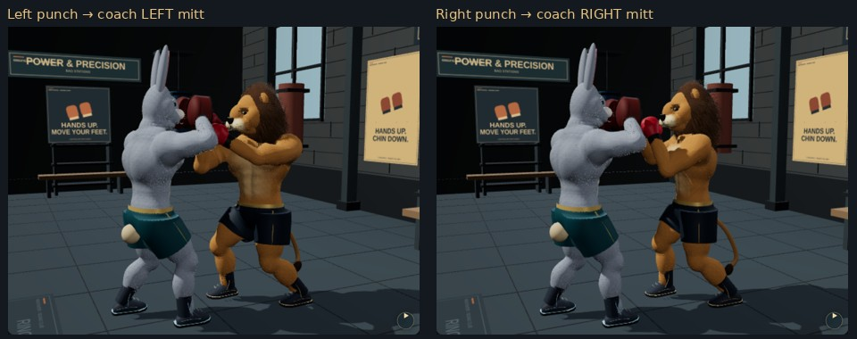

Left punch → coach's anatomical left mitt. Right punch → coach's anatomical right mitt. Real scene attachment checks identify each mitt independently of camera position.

Validation · Open RingFighter